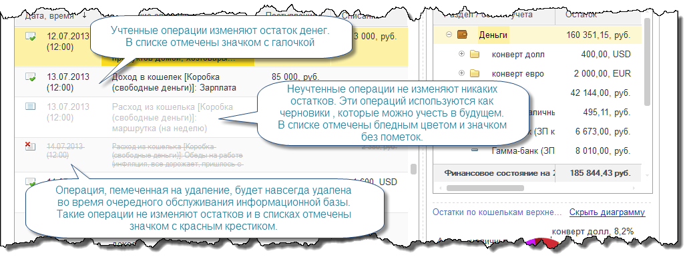

Страница Операции предназначена для ведения учета и контроля текущих остатков. Список операций на этой странице дополнен панелью итогов, с помощью которой можно оперативно контролировать остатки денег и суммы доходов / расходов по статьям.
Перед началом ведения учета добавьте свои кошельки, долги и объекты имущества на закладке Остатки по разделам учета, а на закладке Доходы и расходы - проверьте и отредактируйте основные статьи доходов и расходов.
Учет в программе ведется по следующим разделам:
| Раздел учета | Особенности |
| Деньги | В разделе учитываются остатки наличных и безналичных денег в кошельках любого типа, кроме кредитных банковских карт. Отрицательный остаток в кошельках этого раздела учета считается ошибкой. |
| Кредитные карты | В разделе учитываются остатки денег в кошельках с типом Банковская карта кредитная, а так же отрицательные остатки денег в кошельках с типом Банковская карта универсальная. Обычно, остаток в кошельках этого раздела отрицательный; положительный остаток расценивается как резерв для погашения будущих долгов по кредиткам. |
| Имущество | Учитывает стоимость объектов имущества, таких, как недвижимость, атвотранспорт, дорогостоящее оборудование и т.д. |
| Нам должны | Учитываются остатки выданных займов и прочих долгов. |
| Мы должны | Учитываются остатки взятых кредитов и займов, в том числе и остатки банковских кредитов. Остатки в этом разделе учета отрицательные. |
Обратите внимание, что в дереве остатков отображаются только актуальные кошельки, долги и имущество. Получить доступ к полному списку объектов учета можно с помощью соответствующих команд меню Справочники в панели команд.
В зависимости от ширины формы команды дерева остатков могут автоматически сворачиваться в меню Еще. Эти команды позволяют добавлять новые объекты учета, изменять их, использовать в отборе списка операций, а так же получать контекстные отчеты.
Для удобства работы со списком операций задайте Период, за который нужно учесть и проверить операции. При необходимости можно установить Отбор по конкретному кошельку, объекту имущества или долгу. Новые операции добавляйте с помощью команд меню Создать операцию:
| Вид операции | Особенности |
| Доход | Учитывает любое поступление денег по статьям дохода. |
| Расход | Предназначена для учета платежей по статьям расхода и приобретения имущества. Позволяет учитывать как расход денег, так и оплату в кредит. |
| Перемещение | Предназначена для учета переводов денег между банковскими счетами, снятия наличных, пополнения банковских карт и прочих перемещений денег между любыми кошельками в оной валюте. Одновременно с переводом можно учесть накладные расходы, например, комиссии банка, почтовые сборы и т.п. |
| Обмен валюты |
Предназначена для учета купли / продажи валюты. Одновременно можно учесть накладные расходы, например, комиссии банка, почтовые сборы и т.п. |
| Мы дали в долг | Учитывает сумму, выданную в долг. Одновременно можно учесть накладные расходы, например, комиссии банка, почтовые сборы и т.п. |
| Нам вернули долг | Учитывает сумму возврата выданного ранее долга. Операция позволяет погасить долг полностью или частично, получить проценты за пользование деньгами, при необходимости - списать остаток долга. Одновременно можно учесть накладные расходы, например, комиссии банка, почтовые сборы и т.п. |
| Мы взяли в долг | Предназначена для учета полученных займов и банковских кредитов. Одновременно можно учесть накладные расходы, например, комиссии банка, почтовые сборы и т.п. |
| Мы вернули долг | Учитывает погашение взятого долга (кредита). Позволяет погасить долг полностью или частично, уплатить проценты и комиссии и учесть прочие накладные расходы. |
| Ввод / изменение остатка | Используется для задания нового остатка денег, имущества или долга. Программа автоматичкски вычислит сумму дохода или расхода, необходимую для установки указанного остатка. |
| Универсальная операция | Предназначена для учета финансового события любой сложности. Например, погашение долга одновременно деньгами и имуществом, перенос остатка с одного долга на другой, оплата расхода несколькими валютами одновременно, изменение стоимости имущества и т.п. |
Для того, чтобы операция изменила остатки, она должна быть учтена. В списке такая операция отмечается значком с зеленой галочкой. Неучтенные операции можно рассматривать как черновики - они сохранены в информационной базе, но никак не влияют на учет и остатки. У неучтенных операций значок не содержит галочки или другой пометки.
Ненужную операцию можно пометить на удаление, что бы при очередном обслуживании информационной базы удалить ее безвозвратно. Такие операции отмечены значком с красным крестиком.

Команды по изменению операций в списке расположены в меню Еще. С помощью этих команд можно изменять выделенные в списке операции, помечать их на удаление и снимать пометку, и выполнять прочие действия.

Дополнительная информация: Шаблоны операций, Справочники, Отчеты